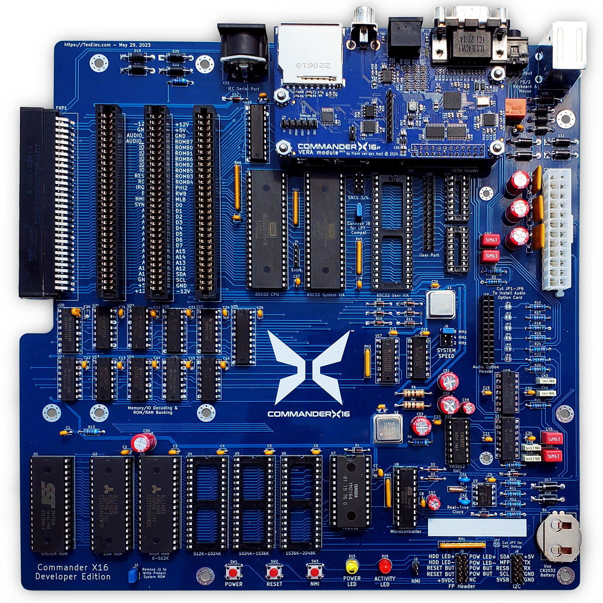
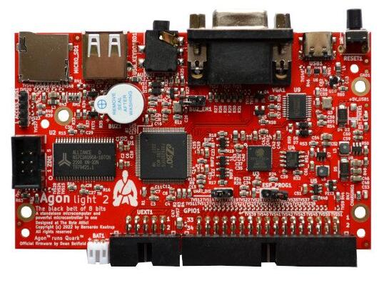

Purity Was Never Real
Some retro fans say FPGAs ruin the hobby, and that the C64U is killing it. But the machines they love were built on custom chips and programmable logic from day one, and the 8-bit world was never one big happy family. Here’s my take on the purity arguments, and why most of them judge the wrong thing.
The Slowdown Problem
One of the first SNES games I bought was Super R-Type. It’s a hard game, and it gets worse when the screen fills up with enemies and the whole thing just crawls. On the NES, Super Dodge Ball did the same, with lots of flicker thrown in for good measure.
Today you can fix that. A fan patch moves Super R-Type onto the SA-1, the faster coprocessor Nintendo used in later carts, and it runs on a real SNES through an FPGA flash cart. Emulators can just overclock the CPU.
So here’s the question: is the slowdown a bug, or is it the game? For me it made a hard game harder. Some players argue the opposite, that it works as accidental bullet time when the screen fills up. The purist says the slowdown is authentic. The improver says it’s a defect. That’s the whole retro purity argument in one cartridge.
Where I’m Coming From
I grew up in the 80s when there was an incredible diversity of platforms. Early on it was Atari, Odyssey 2, Intellivision, and Coleco, next to the Commodore, Apple, and TRS-80 computers. After the crash it was Nintendo versus Sega, with the C64 and the PC games down another aisle. Where you shopped mattered: a toy store, a department store, and a software shop each sold a different slice.
A few years ago I downloaded a pile of old BYTE and COMPUTE! magazine scans, and paging through them is a reminder of how much was going on.
I’m an embedded engineer by trade. In school I couldn’t decide between EE vs CS so I split the difference and went the computer engineering route. These days, I mostly write software. I’ve always liked breadboarding and prototyping. Ben Eater’s 6502 kit has real pull for me.
Lately I’ve been watching videos about the modern retro scene, and a lot of them are arguing about purity. Some are worth hearing out. Then again, some take fifteen minutes to even get to a point. This post is me sorting out what I actually think, dated, so I can check back in a few years and see how wrong I was.
What People Actually Loved
One recurring complaint is that new retro machines use FPGAs. The implied ideal is a computer built from 7400-series logic and off-the-shelf chips. Very few classic machines fit that. The Apple II is the poster child, with Woz building video out of jellybean TTL. The TRS-80 Model I and Sinclair ZX80 qualify too. The IBM PC doesn’t: it’s built from off-the-shelf Intel LSI support chips, not discrete logic.
What people loved about the 80s machines was the custom silicon. The VIC-II and SID. POKEY and ANTIC. The NES PPU. The Amiga chipset. The personality lived in those chips, and the CPU was mostly along for the ride.
Programmable logic was there from the start, too. Early C64s included a Signetics 82S100, a programmable logic array (PLA). The original Mac was full of PALs. Sinclair and Acorn built machines around Ferranti ULAs, which are semi-custom gate arrays. So, an FPGA isn’t a foreign intrusion. It’s the grandchild of the 82S100.
And original hardware is already being rebuilt from modern parts. There are replacement PLAs, ARM and FPGA SID replacements, and the VIC-II Kawari replacement runs on an FPGA. Supplies of the real chips are finite, and through-hole parts keep getting harder to buy.
Finding alternatives isn’t heresy. It’s maintenance.
Two Kinds Of Machines
Most of the arguments I’ve seen make more sense once you split modern retro hardware by purpose. Playback machines exist to run the existing library accurately. New platforms exist to give you something new to write for.
Playback is the big market, and it comes in a few flavors. Some are emulators on ARM boards in a familiar case, like the C64 Mini and Maxi or the 800XL remake. MiSTer runs nearly everything on an FPGA. And some, like the MEGA65 and the Spectrum Next, are new machines that happen to run the old library too. What they share is a back catalog on day one. Building and programming for a new retro platform is a niche inside that niche.
| Machine | Purpose | How it’s built |
|---|---|---|
| MiSTer | Playback | FPGA, many cores |
| C64U | Playback | FPGA |
| Analogue / Super NT | Playback | FPGA, single system |
| Commander X16 | New platform | Real 65C02 and 65C22s, 74-series glue, FPGA video (VERA) |
| MEGA65 | New platform (with C64 mode) | FPGA |
| Agon Light | New platform | eZ80, with an ESP32 microcontroller for video |
| GameTank | New platform | Two real 6502s, video from a discrete-logic blitter, no FPGA |
Judge a playback machine on accuracy and compatibility. Judge a new platform on whether it’s fun to build for and whether anyone does. A lot of the criticism I’ve heard judges one kind by the other’s yardstick.
The X16 and the MEGA65 are a good example. They look like opposites, chips you can pull versus a single FPGA, but they share a pitch: the machine that should have come next. They also share a problem. The C65 never shipped and the X16 never existed, so neither has a back catalog. That’s a bigger hurdle for both than price or purity.
David Murray (The 8-Bit Guy) said as much himself. In his first “dream computer” video, he called the MEGA65 basically his dream computer and wondered whether it would ever ship. It’s literally what would have come after the C64, and the X16 is a run at the same idea. Both took years to ship, and the MEGA65 is now around $840, which makes the X16’s price complaints look mild.
If all you want is C64 software, the new Commodore C64U is the better fit. The MEGA65 earns its place another way: the C65 mode, plus extra cores that let it become other machines entirely. That’s very cool, and more than a C64 box can say.
And the purist machine does exist. The GameTank has no FPGA and no microcontroller: two real 6502s, one for audio, and a blitter built from logic gates drawing into 128×128 framebuffers over composite video. It’s a genuinely impressive piece of work. It also shows what honoring the no-FPGA rule buys you today: 128×128 on composite, for around $300.
X16 Versus Agon
These two get compared a lot, and they’re about as different as two 8-bit-flavored computers can be.
The Commander X16 is a large board of socketed chips: a 65C02, 65C22 VIAs, SRAM, a flash ROM, 74-series glue logic, and a Yamaha YM2151 for FM sound. Video and a PSG come from VERA, an FPGA. It boots to a Commodore-style BASIC with DOS commands built in. It has the Apple II appeal of poking around with hardware, and it’s basically Ben Eater’s 6502 project grown up.
It started with the 8-Bit Guy’s 2019 “dream computer” videos: a machine you could understand completely, booting to BASIC like a VIC-20 or C64. One requirement was there from the start: video on the bus, byte-addressable, so you can PEEK and POKE it. That’s why the original Gameduino was rejected. It was itself FPGA-based, but it talked over SPI.
The developer board shipped around 2023, and the kit runs about $260 before you add a power supply and keyboard.

The Agon Light, designed by Bernardo Kastrup and built by Olimex, takes the modern route. An eZ80 runs BBC BASIC, and an ESP32 handles video. It’s small, surface-mount, fast, and cheap, and Olimex has a history of shipping in volume.

The parts list hides the biggest difference. On the X16, VERA is memory-mapped, so the CPU pokes video registers directly, just like a C64. On the Agon, the video system is a separate computer. The eZ80 sends it command streams over a serial link, closer to driving a smart terminal than touching hardware.
That difference is what the funniest critique video missed. It was a parody, since pulled: a cut-up of the original dream computer videos, all the shifting designs and prices, ending on the Agon Light 2 at about $50 as the dream computer that actually shipped. Fair hit.
The Agon does meet many of the original goals, and it hit the price point. But it skips the requirement that killed the Gameduino: video on the bus. An ESP32 on a serial link is exactly the kind of off-bus video that got rejected.
Another argument I’ve seen is that the Agon is the more elegant design; it uses modern surface-mount chips and fewer of them. Fair hit again. But modern layout shows off the designer’s skill, not the owner’s. Someone who buys an assembled Agon never touches it. If anything, the X16 exposes the fundamentals that still transfer: address decoding, bus timing, and memory-mapped peripherals.
And neither machine is relevant to modern engineering practice. After all, both of these are using 8-bit CPUs. If relevance is the goal, go buy something like a Nucleo board. Arguing over which hobby computer is more modern is like arguing which horse-drawn buggy is more advanced in the age of AI.
Both are neat. They just answer “what part of the 80s did you miss?” differently.
Nothing Is Killing The Hobby
Another video argued the C64U is splitting the scene. The 8-bit world has always been split. In the 80s you got multiple versions of the same game, of varying quality, and kids argued Commodore versus Atari on the playground.
Today it’s more fragmented, not less. There are dozens of original machines to collect, MiSTer cores for systems people never owned, and a whole shelf of new designs: the X16, Agon, MEGA65, RC2014, Pico-56, etc. Replica minicomputers like the PiDP-8/I, PiDP-11, and IMSAI 8080ESP put an emulator behind a real front panel. That’s a lot of stuff, and a lot of stuff is a healthy hobby.
From what I’ve seen, the C64U goes out of its way to be a C64, right down to the slow disk loads and the drive noises. You get a newer, probably more reliable machine that still works with most of the original peripherals. That looks like a win-win to me.
Much of the rest is gatekeeping. Picture someone new to this, in their twenties, being told by a guy who bought a 1541 for twenty bucks in 2005 that an FPGA machine doesn’t count. Originals cost more every year, and they’re dying. The C64’s original power supply can fail by overvolting and take the chips with it. “Real hardware” increasingly means real hardware with a modern power supply, new caps, and replacement chips.
So how original is the purist’s C64? Swap in a Kawari, a replacement SID, a new PLA, and a modern power supply, and a good chunk of it is new. Nobody calls it fake. If that C64 still counts as real, FPGA purism already lost.
It goes further. Most new 8-bit software isn’t written on the real thing. It’s written on a modern PC with a cross-compiler like cc65, and tested in an emulator before it ever touches hardware. The purists use modern tools too.
Preservation isn’t just chips, either. Old floppies and tapes are aging, and the drives that read them are one more old device that has to keep working. Modern substitutes like SD2IEC and Pi1541 take that weak link out, even on original hardware, and they’re usually the better experience anyway.
Purity was never real. The machines people loved were built on whatever worked, and the scene has always been a mess of platforms. That’s not a problem to fix. It’s the hobby.